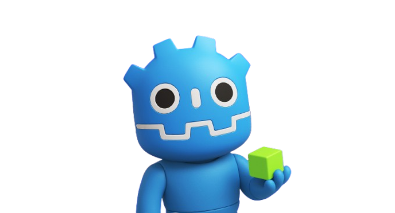

01 — SCENE CONVERSION
Сцены Godot → RBXMX
Читает текстовые .tscn-сцены, сохраняет приблизительную иерархию и создаёт XML-модели для дальнейшей проверки в Roblox Studio.
GodotBridge анализирует Godot-проекты и создаёт основу Roblox-проекта: сцены RBXMX, ресурсы, Luau-черновики и отчёт о конвертации. Перенос выполняется постепенно — с понятными ограничениями и ручными этапами.

Архив включает программу, исходники, примеры, тесты и русскую пошаговую инструкцию.
GodotBridge не обещает автоматически превратить любую игру в готовую Roblox-копию. Он структурирует переносимые данные, создаёт заготовки и показывает, что нужно адаптировать вручную.
Читает текстовые .tscn-сцены, сохраняет приблизительную иерархию и создаёт XML-модели для дальнейшей проверки в Roblox Studio.
Текстуры, аудио и модели копируются в отдельные папки результата. В отчёте видно, какие файлы потребуют ручной загрузки в Roblox.
Поддерживаемые CanvasLayer и корневые Node2D преобразуются в ScreenGui. Базовые элементы интерфейса получают Roblox GUI-представления.
Поддерживаемая часть синтаксиса GDScript переводится в Luau-заготовки. Неподдерживаемые вызовы отмечаются для ручной адаптации.
Отдельный отчёт перечисляет найденные ресурсы, созданные объекты, предупреждения и участки, которые нельзя перенести автоматически.
Упакуй полный проект с project.godot, читаемыми .tscn-сценами и необходимыми ресурсами.
Выбери архив в GodotBridge. Программа проверит проект, создаст файлы и соберёт отчёт о переносе.
Импортируй RBXMX, перемести ScreenGui в StarterGui, назначь asset ID и адаптируй неподдерживаемые системы.
Для первого запуска прочитай «ПОШАГОВАЯ УСТАНОВКА.txt». В ней описан проверенный способ запуска через контекстное меню Windows (ПКМ), установка Python/Tkinter и подготовка Godot-проекта.
GodotBridge — настольный Python-инструмент для Windows. Отдельный готовый EXE в этом выпуске не поставляется.
